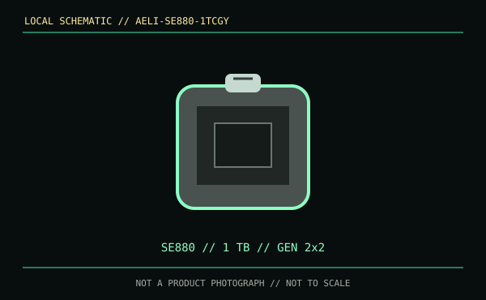

[ REMOVABLE MEDIA // MODEL-SPECIFIC RECORD ]
ADATA SE880 1 TB (AELI-SE880-1TCGY)
The AELI-SE880-1TCGY identifies a 1 TB finished external SSD, not a replaceable internal drive or bare enclosure. Its compact Type-C connector still depends on USB host protocol and bandwidth.

IDENTIFICATION: Verify the product family and capacity-specific part number; regional packaging and available capacities can vary.
Format, capacity and compatibility
| Product / part ID | ADATA SE880 External SSD, 1 TB, AELI-SE880-1TCGY |
|---|---|
| Interface | USB 3.2 Gen 2x2, USB Type-C, up to 20 Gb/s. Backward USB compatibility operates only at a mode supported by both host and cable. |
| Performance | ADATA lists sequential read and write speeds up to 2,000 MB/s. Actual speed depends on the host, cable, capacity, thermal state and transfer pattern; Gen 2x2 is required for the quoted ceiling. |
| NAND / endurance | The cited ADATA product sheet does not give a NAND type or TBW rating for the 1 TB SKU. |
| Compatibility | ADATA lists Windows, macOS, Linux and Android support for the family. Confirm USB-C data mode, OS/filesystem support, and device power/OTG behavior for the specific host. |
| Enclosure / SKU caveat | This is the factory external-drive product. A USB-C port or phone adapter does not imply that every mobile device can mount, power or run the drive at peak speed. |
Handling and preservation
Use a suitable data cable, safely eject, and avoid sustained heat. Preserve SKU and purchase documentation. Keep checksummed copies on independent media; compact portable flash storage is not a long-term, single-copy preservation strategy.
Sources and standards
- ADATA — SE880 external SSD product specificationsManufacturer product page and capacity-family specifications.
- ADATA — SE880 external SSD product information and downloadsManufacturer product details and specification information.
- USB-IF — USB 3.2 specifications overviewUSB interface-generation reference.